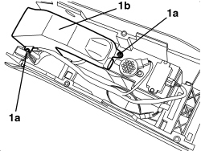

5010B86 CENTRE CONSOLE COOLING DUCT - R.R.
- Path
- Procedures > 50 AUXILIARY UNITS > 5010 CLIMATE CONTROL - MISCELLANEOUS > 5010B CLIMATE CONTROL AIR PIPES AND DUCTS > 5010B86 CENTRE CONSOLE COOLING DUCT - R.R.
- Kind
- repair procedure (removal / refitting; the operation number is the code)
- Applies to
- engines: 2.2 JTS, 3.2 JTS; all production periods; only with equipment: Spider
- Interactive page
- https://sloeber94.github.io/elrnDB-aBrrSpdr/en/#/946004051
Applies to: engines: 2.2 JTS, 3.2 JTS; all production periods; only with equipment: Spider
 Removing
Removing
 Refitting
Refitting- Remove both seats.
Op. 7045A10 FRONT SEAT (ONE), LEFT OR RIGHT - R.R.
Op. 7040L37 GEAR LEVER TRIM - R.R
Op. 7040L23 TRIM ON TUNNEL COVER - R.R.
Op. 3380A44 HANDBRAKE/LINKAGE PROTECTION - R+R
Op. 7040H21 MOULDING ON PASSENGER COMPARTMENT REAR TRIM - R.R.
Op. 7040H22 PASSENGER COMPARTMENT REAR TRIM (SPIDER) - R.R.
Op. 7040L31 REAR ODDMENTS COMPARTMENT - R.R.
Op. 7040L51 REAR ODDMENTS COMPARTMENT SUPPORT - R.R.
Op. 7040L20 TUNNEL COVER - R.R
1. Undo the bolts (1a) and remove air duct (1b) by releasing the retainers.

Applies to: engines: 2.2 JTS, 3.2 JTS; all production periods; only with equipment: Spider
Refitting
Removing- Check that the air duct is not damaged.
- Place the air duct in position attaching the retainers, then tighten the bolts.
Op. 7040L20 TUNNEL COVER - R.R
Op. 7040L51 REAR ODDMENTS COMPARTMENT SUPPORT - R.R.
Op. 7040L31 REAR ODDMENTS COMPARTMENT - R.R.
Op. 7040H22 PASSENGER COMPARTMENT REAR TRIM (SPIDER) - R.R.
Op. 7040H21 MOULDING ON PASSENGER COMPARTMENT REAR TRIM - R.R.
Op. 3380A44 HANDBRAKE/LINKAGE PROTECTION - R+R
Op. 7040L23 TRIM ON TUNNEL COVER - R.R.
Topics linked from this page (9)
- 3380A44 HANDBRAKE/LINKAGE PROTECTION - R+R
- 7040H21 MOULDING ON PASSENGER COMPARTMENT REAR TRIM - R.R.
- 7040H22 PASSENGER COMPARTMENT REAR TRIM (SPIDER) - R.R.
- 7040L20 TUNNEL COVER - R.R
- 7040L23 TRIM ON TUNNEL COVER - R.R.
- 7040L31 REAR ODDMENTS COMPARTMENT - R.R.
- 7040L37 GEAR LEVER TRIM - R.R
- 7040L51 REAR ODDMENTS COMPARTMENT SUPPORT - R.R.
- 7045A10 FRONT SEAT (ONE), LEFT OR RIGHT - R.R.